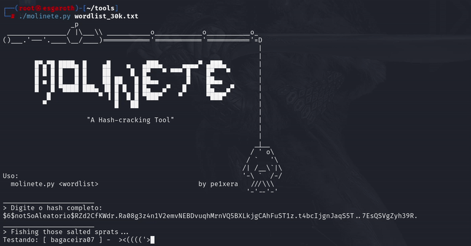
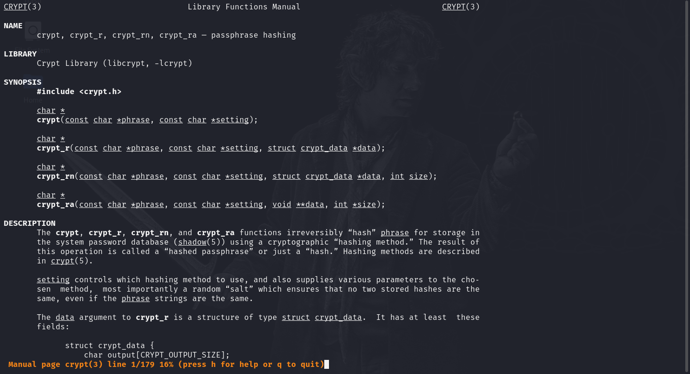
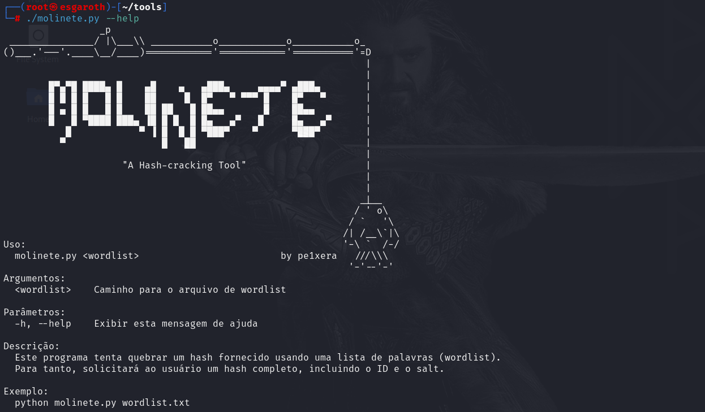
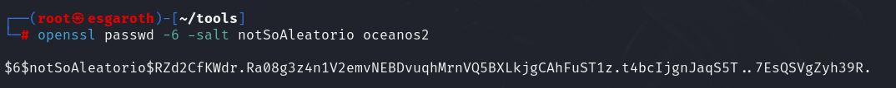
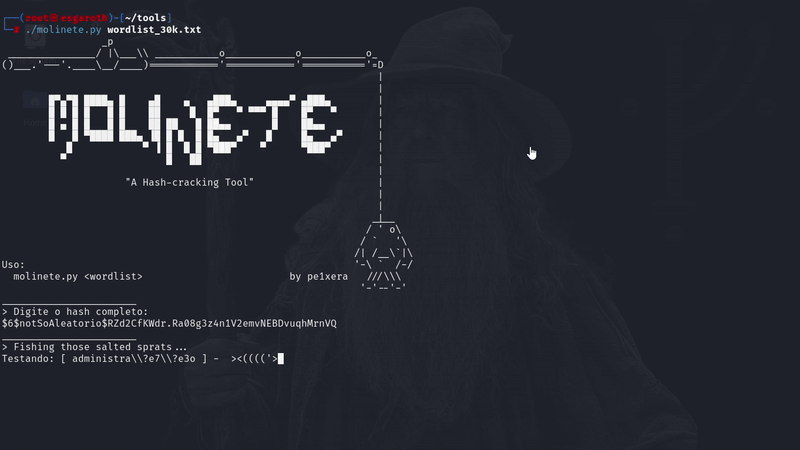

4 minutes
Molinete, “A Hash-cracking Tool”

O processo de quebra de hashes pode ser um grande atraso enquanto se realiza um pentest, especialmente quando o hash tem sua complexidade aumentada com aquela boa e velha pitada de Salt, um dado aleatório que é usado para gerar uma saída totalmente diferente daquela que a função de hash geraria por padrão, somente com a senha.
Diante disso, desenvolvi uma ferramenta - bastante simples, na verdade - que tenta agilizar nossas vidas. O molinete, como apelidei a ferramenta, utiliza uma wordlist fornecida pelo usuário e, por meio da função crypt, testa diversas senhas até encontrar a correspondência exata com o hash fornecido.
Neste artigo, explico os detalhes do funcionamento do Molinete e a lógica por trás do programa. Fico totalmente aberto às sugestões de melhoria e às críticas, para melhorá-lo no decorrer do tempo.
E não, meu sobrenome (definitivamente) não tem nada a ver com a temática das minhas ferramentas, nem a minha suposta afeição pelo oceano! XD
Atire primeiro…

Pequena demonstração da ferramenta em execução.
Molinete é uma ferramenta em Python para quebra de senhas no Linux, ou melhor, a quebra de hashes com salt especificamente - além de ter um belo banner.
Creio ser de conhecimento do querido leitor que as funções de hash são funções “one-way”, irreversíveis por natureza, sendo possível obter o equivalente de um hash somente pela comparação com outro hash, o que explico melhor no decorrer do texto.
A ferramenta, em questão, lê o hash digitado pelo usuário e o divide em três partes, conforme o padrão aceito pela função crypt: ID, Salt e Hash, mostrando na imagem abaixo. Ela usa o caractere de cifrão ($) para separar os pedaços do hash e continuar com os outros procedimentos.

Padrão usado na função crypt.
O salt nada mais é do que qualquer valor incluído antes do início do processo do algoritmo de hashing, que adiciona uma camada a mais de aleatoridade aos hashes, dificultando a sua quebra, mas não impossibilitando o procedimento.
Após a divisão, o programa cria o hash de cada uma das senhas na wordlist usada como argumento, com base no tipo de algoritmo do hash passado e no salt obtido, semelhante à simplificação contida no esquema abaixo.

Funcionamento do hashing com salt.
Assim, caso o hash final gerado de qualquer uma das senhas da lista de palavras seja igual ao hash digitado pelo usuário, sabe-se que aquela é a senha correta.
Pergunte depois!
A ferramenta se baseia na função crypt, do Python, que permite gerar hashes a partir de uma senha e um salt específicos. A crypt utiliza o algoritmo de hashing especificado pelo ID do hash fornecido pelo usuário. Isso garante que a ferramenta possa lidar com diferentes tipos de hashes, como MD5, SHA-256, entre outros, dependendo do ID e do salt extraídos do hash completo.

Página de manual da função crypt.
Para facilitar a utilização, o código foi estruturado para receber o caminho da wordlist como argumento e o hash completo diretamente do usuário. A animação de loading, que mostra um peixe nadando, torna o processo mais amigável e menos tedioso, exibindo também qual senha está sendo testada no momento.
Para facilitar ainda mais o entendimento, pode-se usar os parâmetros -h e --help para mostrar um pequeno manual do script, como na figura abaixo.

Função de ajuda, exibida com os parâmetros de help (e o banner).
Uma outra propriedade deste código, que acho interessante ressaltar, é o uso de threading. Enquanto uma thread testa as senhas, a outra mantém o usuário informado com a animação, sem bloquear a execução principal do programa, de modo que uma coisa não interfere na outra.
Podemos, inclusive, gerar hashes de senhas que estão na wordlist, para validar o funcionamento da ferramenta, conforme o exemplo abaixo, onde geramos um hash SHA-256 da senha oceanos2, combinada com o salt notSoAleatorio.

Gerando um hash SHA-256 com salt por meio do OpenSSL.
Disclaimer
Certamente, há uma série de ferramentas muito melhores que essa disponíveis. Ainda assim, a fim de praticar os meus próprios conhecimentos, a fim de ter uma ferramenta confiável em meu arsenal e, principalmente, a fim de fazer mais ASCII Arts, achei válido criar e compartilhar este script por aqui.
Antes que você pergunte, a ferramenta já está disponível no GitHub, e você pode usá-la como bem entender: https://github.com/pe1xera/molinete. Divirta-se!

No mais, fico completamente aberto às sugestões e críticas.
Não é muito, mas é trabalho honesto! :)

Goodbye, little sprat! 'Til next time!
Muito obrigado pela sua leitura até aqui! ><((((('>
746 Words
2024-07-22 21:00